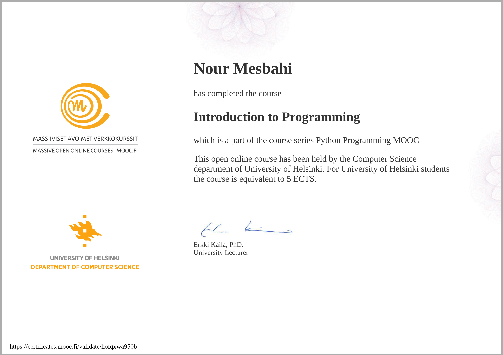
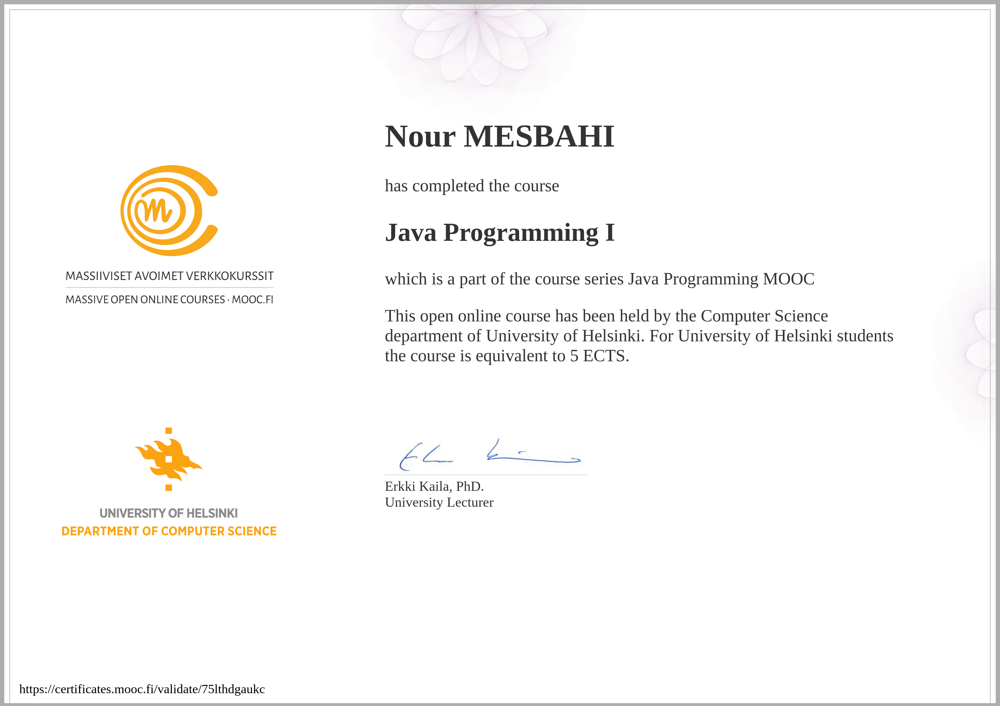
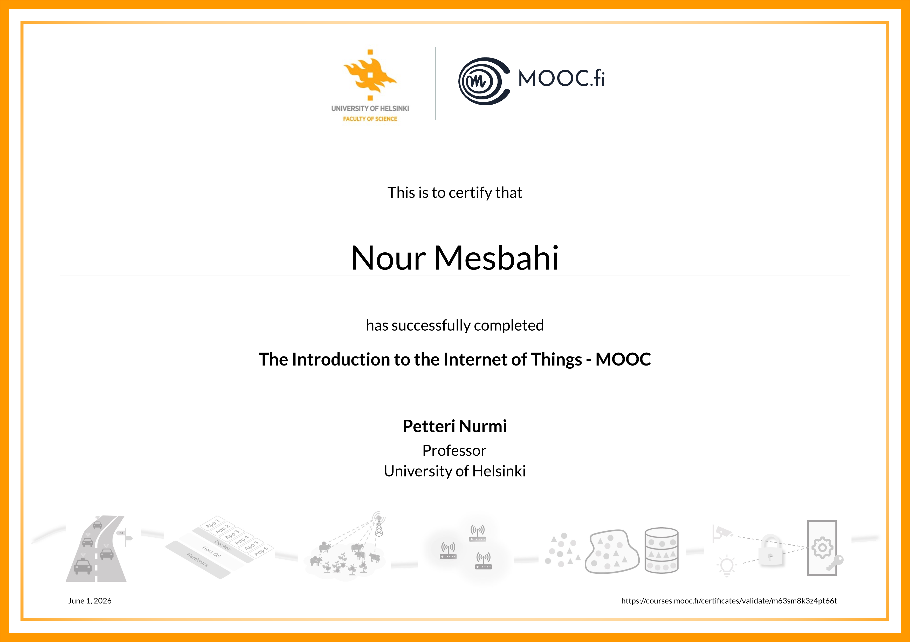

Présentation de l'épreuve facultative
Objectif : valoriser un parcours auto-formé et préparer l'entrée en L3 Informatique
L'épreuve facultative du BTS SIO option SLAM permet au candidat de présenter un parcours personnel de certification complémentaire à la formation initiale. Elle valorise l'autonomie, l'engagement dans une démarche d'auto-formation et la capacité à élargir ses compétences au-delà du référentiel.
J'ai choisi de suivre trois MOOC certifiants de l'Université d'Helsinki (Finlande), reconnus internationalement et délivrant des crédits ECTS directement valorisables auprès des universités françaises. Ces parcours couvrent les fondamentaux de la programmation (Python, Java) ainsi que les objets connectés (IoT), trois domaines clés pour la poursuite d'études en informatique.
L'objectif est double : consolider mes acquis techniques à un niveau universitaire, et obtenir une reconnaissance académique formelle pour faciliter mon entrée en Licence 3 Informatique à l'issue du BTS, puis poursuivre vers un Master dans le cadre du cursus LMD.
Les trois certifications obtenues
University of Helsinki · MOOC.fi · Plateforme officielle
HELSINKI
5 ECTS

HELSINKI
5 ECTS

HELSINKI
~4 ECTS

Certifications obtenues chez EDF
Formations internes suivies durant l'alternance — Université Groupe EDF & eCampus
En complément des MOOC universitaires, mon alternance chez EDF m'a permis de suivre plusieurs formations certifiantes internes dans les domaines de la cybersécurité, de la donnée et de l'intelligence artificielle. Ces certificats attestent d'une sensibilisation aux bonnes pratiques professionnelles et aux enjeux numériques d'un grand groupe industriel.
Chronologie du parcours
9 mois de formation menés en parallèle de l'alternance EDF
Bénéfices pour la poursuite d'études (LMD)
Comment ce parcours facilite l'entrée en Licence 3 puis Master
Reconnaissance académique
Les MOOC d'Helsinki sont délivrés par une université publique européenne et créditent en ECTS directement valorisables auprès des facultés françaises. Un dossier d'admission en L3 enrichi de ~14 ECTS supplémentaires renforce la crédibilité d'une candidature post-BTS.
Niveau équivalent L2 atteint
Les programmes Python et Java d'Helsinki couvrent le niveau attendu en L1/L2 Informatique : algorithmique, programmation orientée objet, structures de données. Cela comble l'écart théorique souvent reproché au BTS et facilite l'équivalence en L3 Informatique.
Démarche d'auto-formation
Trois certifications menées en parallèle de l'alternance démontrent rigueur, autonomie et capacité à apprendre seule — des qualités essentielles attendues à l'université. Un argument fort pour les jurys de sélection en Licence et Master.
Polyvalence technique
Python (data, IA), Java (logiciel, mobile, entreprise) et IoT (systèmes embarqués) couvrent les trois grands axes de la formation universitaire en informatique. Un socle solide pour s'orienter vers une spécialisation en Master IA, Cybersécurité ou Systèmes.
Reconnaissance internationale
L'University of Helsinki est classée parmi les 100 meilleures universités mondiales. Ses MOOC sont reconnus dans toute l'Union Européenne via le système ECTS, et appréciés en France pour leur exigence et leur surveillance d'examen.
Complément au BTS
Le BTS SIO SLAM est orienté développement applicatif appliqué. Les MOOC universitaires apportent la profondeur théorique (algorithmique, complexité, génie logiciel) qui distingue un parcours BTS d'une formation universitaire équivalente.
Le projet : intégrer le cursus LMD
Du BTS au Master, étape par étape
Le parcours de certification valide un niveau équivalent au cycle Licence (Bac+2/3) et constitue un dossier solide pour l'admission en L3, prochaine étape ciblée.
2024 – 2026
Informatique
IA / Cybersécurité
Tableau récapitulatif des certifications
Synthèse de l'ensemble du parcours de certification (MOOC + EDF)
| Certification | Organisme | Type | Période | Validation | Durée | ECTS |
|---|---|---|---|---|---|---|
| Introduction to Programming (Python) | University of Helsinki | MOOC | Sept. 2025 – Févr. 2026 | Examen 4 h à distance | ~120 h | 5 |
| Java Programming I | University of Helsinki | MOOC | Janv. – Mai 2026 | ≥ 80 % aux exercices | ~140 h | 5 |
| Introduction to the Internet of Things | University of Helsinki | MOOC | Mai – Juin 2026 | ≥ 80 % + projet | ~40 h | ~4 |
| D-CODE : la Data | Université Groupe EDF | EDF | Mai 2026 | Formation interne | Interne | — |
| Pass Protection Groupe — CyberSécurité | Université Groupe EDF | EDF | Août 2025 | Formation interne | Interne | — |
| D-CODE CYBER 2024 | Université Groupe EDF | EDF | Oct. 2024 | Formation interne | Interne | — |
| Passeport Data & IA | EDF eCampus | EDF | Oct. 2024 | Formation interne | Interne | — |
| Passeport Cyber pour tous | EDF eCampus | EDF | Sep. – Oct. 2024 | Formation interne | Interne | — |
| TOTAL — 8 certifications (3 MOOC universitaires + 5 EDF) | ~300 h | ~14 | ||||